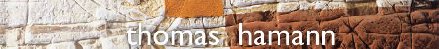

|  | ||||

| 1955 | né à Stuttgart |
| FORMATION |
|
| 1975 | Université Technische Hochschule Aachen (RWTH), Aachen,
Allemagne. . (Section Design et Beaux-Arts) |
| 1979 | Academie voor Toegepaste Kunsten, Maastricht,
Pays-Bas. (Section Architecture). |
| 1983 | Voyage à travers l'Afrique centrale |
| 1996 | Voyage en Amérique du Sud |
|
EXPOSITIONS PERSONNELLES |
|
| 2010 | Galerie d'Art Hodler, Thun, Suisse Octavia Gallery, New Orleans, USA |
| 2009 | Galerie Bizz Art, Christiansand, Norvège |
| 2008 | Parcour² Galerie, Beijing, Chine. Galerie Schmidt, Lüdenscheid, Allemagne. Galerie Menssen, Hamburg, Allemagne. Galerie Éclat dArt, Colmar, France. Galerie Aan de Amstel, Dronten, Pays-Bas. |
| 2007 | Galerie am Dom, Aachen, Allemagne |
| 2005 | Fattahi Fine Arts Gallery, Stamford, USA. Western Connecticut State University, „Excursions“, Danbury, USA. Van Der Plas Gallery, New York, USA. |
| 2004 | Prova de Artista, Lisboa, Portugal. Galerie Ostendorff, Heidelberg, Allemagne. Galerie Au Trésor, Otten, Suisse. |
| 2002 | Galerie Horwarth, Reutlingen, Allemagne. Galerie Hohe Luft, Hamburg, Allemagne. Kunsthandlung und Galerie Stoltenburg, Limburg, Allemagne. Galerie Dür, Rappersville/Zürich, Suisse. |
| 2001 | Galerie Strühmann, Heilbronn, Allemagne. Galerie Strühmann, Moosbach, Allemagne. Galerie Kocken, Kevelaer, Allemagne. |
| 2000 | Galerie Puri, Kassel, Allemagne. Das Kelterhaus, Winningen, Allemagne. VHMA Agentur, Wiesbaden, Allemagne. Galerie Gold, Ingelheim, Allemagne. Galerie M. Hyna, Aichach, Allemagne. |